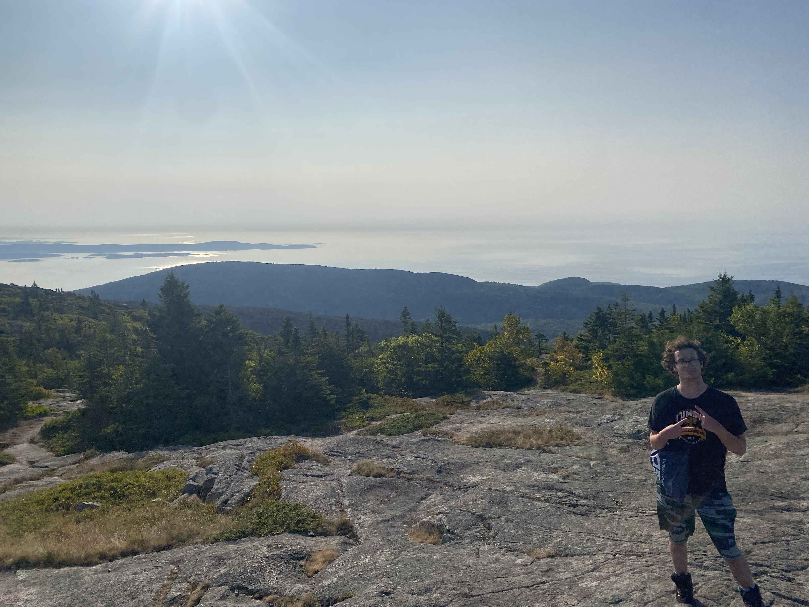
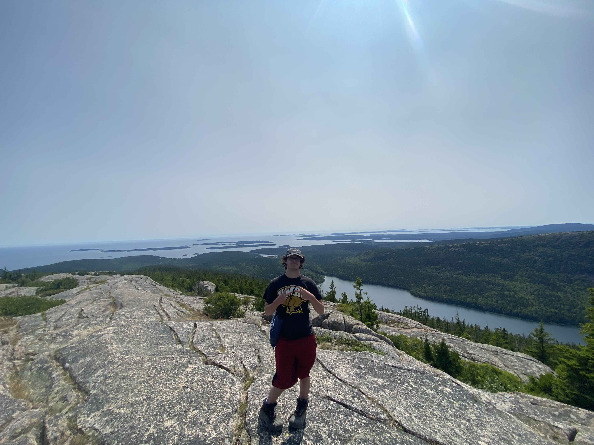

So.................
Who Am I?
Here are some facts about me!
- I have lived in Maryland my entire life.
- Some hobbies of mine include gaming, hiking, traveling,
hanging out and doing activities with friends.
- Graduated from UMBC in May 2025 with a 3.5 GPA.
- Been Working as a Software Analyst/AI trainer for DataAnnotation since October 2025.
- Worked as a Cyber Security Intern at ARMS Cyber
- Worked and created a gaming forum for people to share and discuss their interests.
- Have been programming since 2018.
- Fun Fact, all the background pictures are pictures I took around the country.
Here are some pictures of me!

